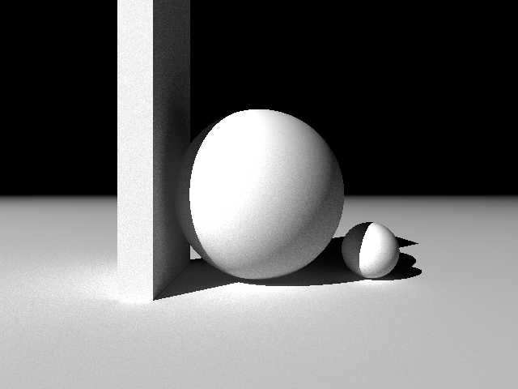
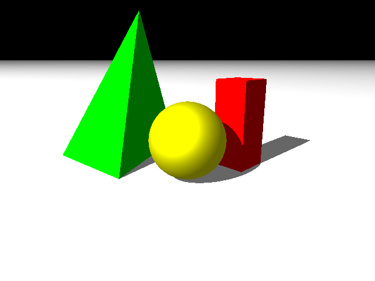

Ray Tracer Ambient Occlusion
Cameron TaylorCal Poly Spring 2017 CPE 473
Final Project: Ambient Occlusion
Ambient occlusion is a technique for approximating shadows when determining the ambient light component for local shading. This is done by casting several rays in a hemisphere around the normal from a incident ray's intersection point. The ambient light component is then divided by the number of these rays that actually intersect something in the scene.
The Monte Carlo ambient lighting technique already provides a mechanism for casting these rays in a hemisphere, so I leveraged that code. The only modification was simply counting the number of these rays that hit another object. I then divided the ambient lighting component by this count.
The reason that this works is because when a hemisphere of random rays are cast where two objects are close together, many of these rays will intersect with another object. This reduces the ambient contribution to local shading and provides a good approximation of shadows.
Examples
Below are some examples of the same image with and without ambient occlusion and monte carlo global illumination.
No Ambient Occlusion or Global Illuminaiton

Global Illuminaiton, no Ambient Occlusion
Ambient Occlusion, no Global Illuminaiton

Ambient Occlusion and Global Illuminaiton

and here with some colors...
No Ambient Occlusion or Global Illuminaiton
Global Illuminaiton, no Ambient Occlusion

Ambient Occlusion, no Global Illuminaiton